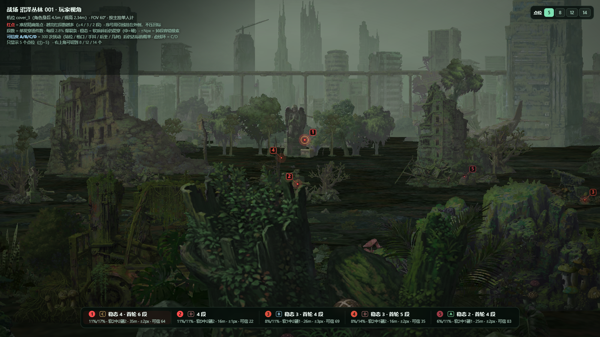
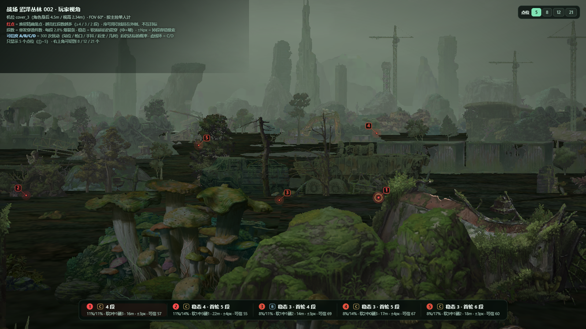
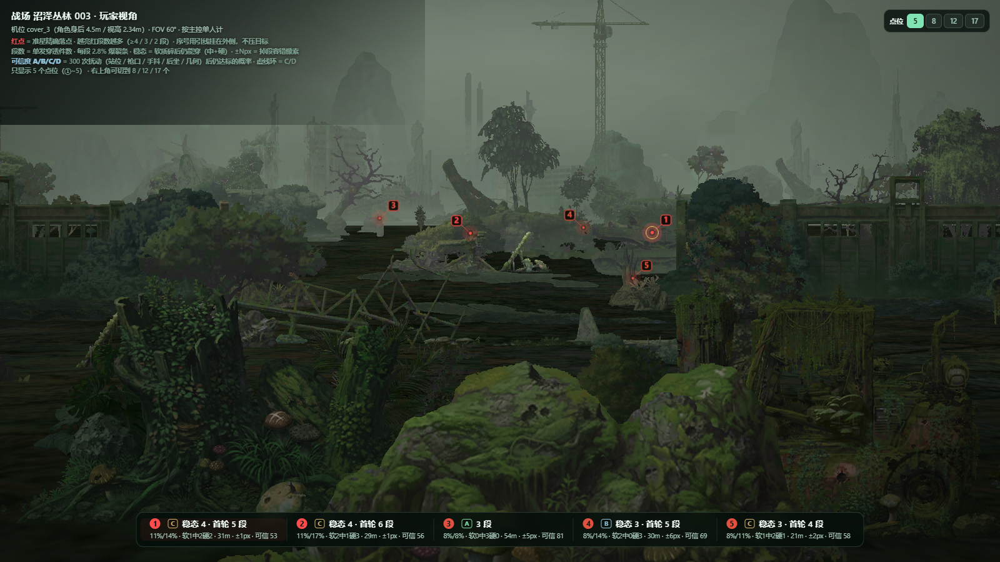
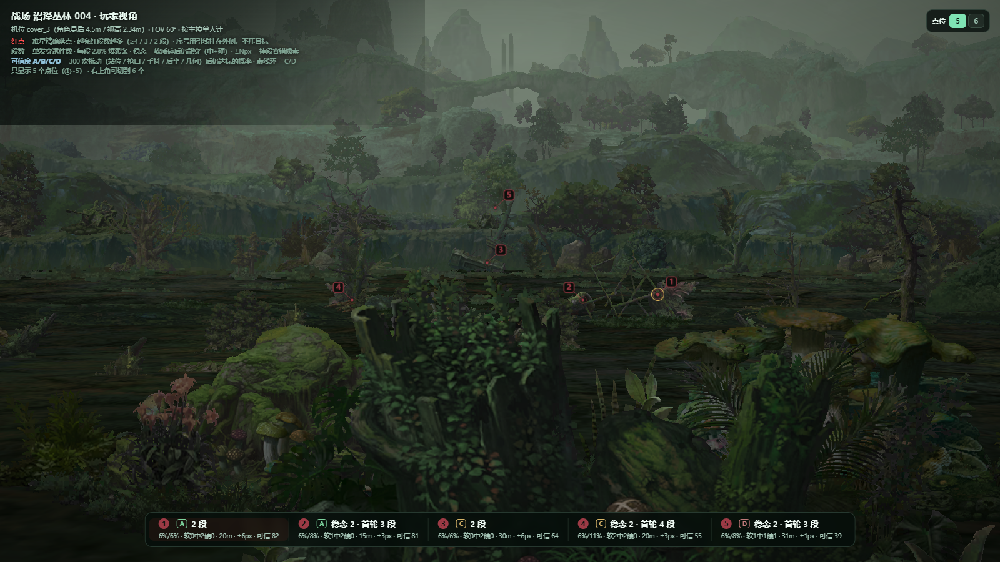
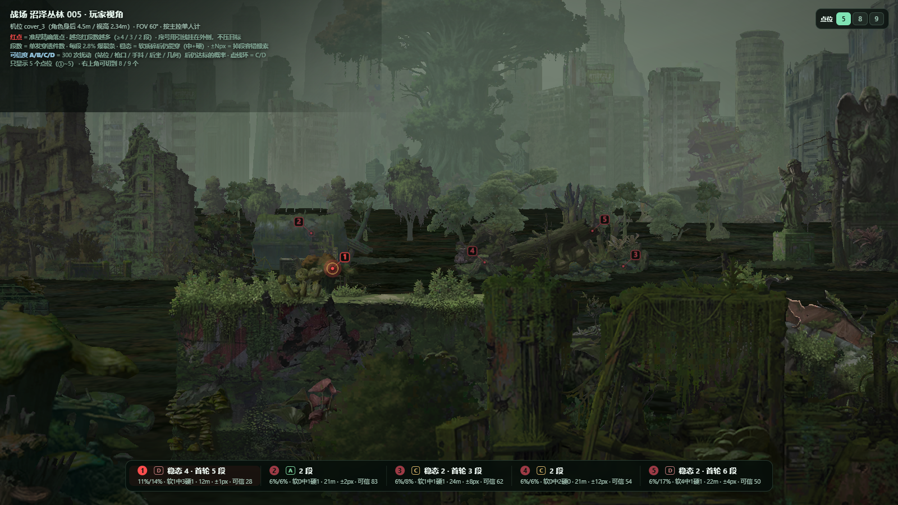

机位取自 cover_3.camera_position：站在角色身后 4.5m、视高 2.34m、
沿 +z、FOV 60°，图里 ①~⑤ 是首选、其后是补充，都是屏幕上能直接压的位置（默认 5 个，可切到全部）。
排序按稳态段数 —— 开局只有主控一人充能，且软质目标一打就碎，碎了不再充能。
原来的点位链是一套假设算到底：相机在 camera_position、
朝向 +z、竖直 FOV 60°、角色站阵位正中、枪口高 1.45m。verify_px.py 的
1000 次模拟只是在这套假设周围抖 —— 假设本身错了，抖一万次也只会把错误算得很自信。
所以这一轮换了六项独立复核，每项单独回答一个问题，互相不背书：
| 项 | 核的是什么 | 为什么必须单列 |
|---|---|---|
| A | 准星像素 → 射线 → 世界点 → 投回像素 | 查代码，不查假设。误差 >1px 就是投影写错了 |
| B | 容错锥：从枪口出发，四方向探到「开始掉段」的边界 | 完全绕开相机。只依赖枪口位置和场景几何，是唯一不受标定影响的指标 |
| C | 5 个阵位各自重算，含遮挡截断 | 玩家不会正好站在基准阵位。这是原算法漏掉的一层 |
| D | 相机俯角 −6°…+6° 全域重投影 | meta 明确写着俯角由运行时 Cinemachine 驱动 —— 唯一没有实证的参数 |
| E | 20:9 / 21:9 / 16:10 / 4:3 下的像素位置 | 手机和模拟器不都是 16:9。纵向 FOV 固定时，横向坐标会整体漂 |
| F | 首击物体在屏幕上占多少像素 | 8×6px 的东西玩家根本认不出来 —— 这是「照图打偏」最朴素的原因 |
per_slot 没做遮挡截断，所以页面上「全阵位」的说法是高估的
—— 这一版已修正，按阵列出的数都是截断后的。| 图 | 场景 | ①~⑤ 平均锥宽 px |
等级分布（S/A/B/C/D） | 明细 |
|---|---|---|---|---|
| 001 | 沼泽丛林 001 | 3.0 | B2 C9 D3 | |
| 002 | 沼泽丛林 002 | 5.3 | B8 C5 D8 | |
| 003 | 沼泽丛林 003 | 4.4 | A3 B4 C6 D4 | |
| 004 | 沼泽丛林 004 | 7.1 | S1 A1 B2 C1 D1 | |
| 005 | 沼泽丛林 005 | 7.8 | S1 A1 C1 D6 |
| 图·号 | 稳态 段 | 锥宽 px | 阵位 可用 |
可用 阵位/总 | 首击物体 | 比例 漂移px | 等级 | 问题 |
|---|---|---|---|---|---|---|---|---|
| 001·1 | 4 | 2.9 | 5/5 | swamplandjungle dm stat… 屏宽 139px · 35m | 5 | C | — | |
| 001·2 | 4 | 2.8 | 4/5 | swamplandjungle dn cann… 屏宽 104px · 16m | 2 | C | 挡:cover_2 | |
| 001·3 | 3 | 2.9 | 3/5 | swamplandjungle dn mush… 屏宽 83px · 26m | 254 | C | 挡:cover_2,cover_4；宽屏漂254px | |
| 001·4 | 3 | 3.7 | 2/5 | swamplandjungle dn tree… 屏宽 186px · 16m | 16 | C | 仅2/5阵位；挡:cover_2 | |
| 001·5 | 2 | 2.5 | 3/5 | swamplandjungle dn tree… 屏宽 83px · 25m | 147 | C | 挡:cover_2,cover_4；宽屏漂147px | |
| 001·6 | 2 | 5.9 | 3/5 | swamplandjungle dn stea… 屏宽 54px · 23m | 108 | B | 挡:cover_2,cover_4；宽屏漂108px | |
| 001·7 | 2 | 12.7 | 3/5 | swamplandjungle dm tree… 屏宽 115px · 35m | 30 | B | 挡:cover_2 | |
| 001·8 | 2 | 6.7 | 2/5 | swamplandjungle dm tree… 屏宽 135px · 37m | 74 | C | 仅2/5阵位 | |
| 001·9 | 2 | 6.0 | 2/5 | swamplandjungle dm stat… 屏宽 139px · 36m | 9 | C | 仅2/5阵位 | |
| 001·10 | 2 | 0.9 | 4/5 | swamplandjungle dn rock… 屏宽 28px · 16m | 19 | D | 锥宽0.9px；挡:cover_2 | |
| 001·11 | 2 | 3.1 | 3/5 | swamplandjungle dn stat… 屏宽 96px · 23m | 231 | C | 挡:cover_2,cover_4；宽屏漂231px | |
| 001·12 | 2 | 11.9 | 1/5 | swamplandjungle dn cann… 屏宽 104px · 18m | 131 | D | 仅1个阵位能用；宽屏漂131px | |
| 001·13 | 2 | 4.4 | 2/5 | swamplandjungle dn tree… 屏宽 110px · 24m | 162 | C | 仅2/5阵位；宽屏漂162px | |
| 001·14 | 2 | 0.9 | 1/5 | swamplandjungle dn tree… 屏宽 155px · 25m | 256 | D | 锥宽0.9px；仅1个阵位能用；挡:cover_2,cover_4；宽屏漂256px | |
| 002·1 | 4 | 6.3 | 3/5 | swamplandjungle dn rock… 屏宽 49px · 16m | 78 | B | 挡:cover_2,cover_4 | |
| 002·2 | 4 | 3.8 | 3/5 | swamplandjungle dn plan… 屏宽 162px · 22m | 242 | B | 挡:cover_2,cover_4；宽屏漂242px | |
| 002·3 | 3 | 5.9 | 2/5 | swamplandjungle sn armo… 屏宽 396px · 16m | 77 | C | 仅2/5阵位；挡:cover_2,cover_4,cover_5 | |
| 002·4 | 3 | 4.7 | 5/5 | swamplandjungle dn airc… 屏宽 62px · 14m | 12 | B | — | |
| 002·5 | 3 | 5.9 | 1/5 | swamplandjungle dn tree… 屏宽 223px · 18m | 85 | D | 仅1个阵位能用 | |
| 002·6 | 3 | 2.0 | 5/5 | swamplandjungle dm tree… 屏宽 144px · 42m | 4 | D | — | |
| 002·7 | 3 | 0.4 | 3/5 | swamplandjungle dn tree… 屏宽 181px · 15m | 45 | D | 锥宽0.4px；挡:cover_2,cover_4 | |
| 002·8 | 2 | 16.8 | 3/5 | swamplandjungle dm car0… 屏宽 189px · 68m | 96 | B | 挡:cover_2,cover_4 | |
| 002·9 | 2 | 4.7 | 2/5 | swamplandjungle dm tree… 屏宽 92px · 46m | 96 | C | 仅2/5阵位；挡:cover_1 | |
| 002·10 | 2 | 2.9 | 4/5 | swamplandjungle dn wood… 屏宽 64px · 15m | 14 | C | 挡:cover_4 | |
| 002·11 | 2 | 12.4 | 2/5 | swamplandjungle sn truc… 屏宽 285px · 16m | 65 | C | 仅2/5阵位 | |
| 002·12 | 2 | 2.3 | 2/5 | swamplandjungle dm stea… 屏宽 61px · 42m | 214 | D | 仅2/5阵位；挡:cover_4；宽屏漂214px | |
| 002·13 | 2 | 5.3 | 3/5 | swamplandjungle dm tree… 屏宽 150px · 19m | 132 | B | 宽屏漂132px | |
| 002·14 | 2 | 4.8 | 4/5 | swamplandjungle dn plan… 屏宽 162px · 21m | 219 | B | 挡:cover_4；宽屏漂219px | |
| 002·15 | 2 | 1.5 | 3/5 | swamplandjungle dn plan… 屏宽 162px · 20m | 212 | D | 锥宽1.5px；挡:cover_4；宽屏漂212px | |
| 002·16 | 2 | 2.6 | 2/5 | swamplandjungle dn tree… 屏宽 190px · 21m | 186 | C | 仅2/5阵位；挡:cover_4；宽屏漂186px | |
| 002·17 | 2 | 4.7 | 3/5 | swamplandjungle dn bull… 屏宽 26px · 15m | 38 | B | 挡:cover_2,cover_4 | |
| 002·18 | 2 | 0.4 | 3/5 | swamplandjungle dn stee… 屏宽 87px · 20m | 156 | D | 锥宽0.4px；宽屏漂156px | |
| 002·19 | 2 | 0.5 | 1/5 | swamplandjungle dn mach… 屏宽 93px · 24m | 224 | D | 锥宽0.5px；仅1个阵位能用；挡:cover_2,cover_4；宽屏漂224px | |
| 002·20 | 2 | 6.5 | 3/5 | swamplandjungle dn stea… 屏宽 97px · 18m | 118 | B | 挡:cover_2,cover_4；宽屏漂118px | |
| 002·21 | 2 | 0.0 | 1/5 | swamplandjungle dm tree… 屏宽 134px · 42m | 238 | D | 锥宽0.0px；俯角敏感；仅1个阵位能用；挡:cover_1,cover_2；宽屏漂238px | |
| 003·1 | 4 | 1.1 | 3/5 | swamplandjungle sm tank… 屏宽 269px · 31m | 82 | D | 锥宽1.1px；挡:cover_2,cover_4 | |
| 003·2 | 4 | 2.3 | 4/5 | swamplandjungle dm cann… 屏宽 99px · 29m | 15 | D | 挡:cover_2 | |
| 003·3 | 3 | 6.0 | 5/5 | swamplandjungle df oilt… 屏宽 45px · 54m | 64 | B | — | |
| 003·4 | 3 | 8.7 | 3/5 | swamplandjungle sm tank… 屏宽 269px · 30m | 45 | B | 挡:cover_2,cover_4 | |
| 003·5 | 3 | 3.9 | 3/5 | swamplandjungle dn plan… 屏宽 62px · 21m | 72 | B | 挡:cover_2,cover_4 | |
| 003·6 | 3 | 0.7 | 2/5 | swamplandjungle dn stea… 屏宽 217px · 14m | 26 | D | 锥宽0.7px；俯角敏感；仅2/5阵位；挡:cover_2,cover_4 | |
| 003·7 | 3 | 4.5 | 2/5 | swamplandjungle dn tree… 屏宽 308px · 16m | 101 | C | 仅2/5阵位；宽屏漂101px | |
| 003·8 | 3 | 3.5 | 2/5 | swamplandjungle dn stea… 屏宽 217px · 14m | 52 | C | 仅2/5阵位；挡:cover_2 | |
| 003·9 | 3 | 3.0 | 3/5 | swamplandjungle dn stea… 屏宽 217px · 14m | 42 | C | — | |
| 003·10 | 2 | 17.7 | 2/5 | swamplandjungle sm airp… 屏宽 262px · 57m | 88 | C | 仅2/5阵位；挡:cover_2,cover_4 | |
| 003·11 | 2 | 6.5 | 2/5 | swamplandjungle sm airp… 屏宽 279px · 55m | 106 | C | 仅2/5阵位；宽屏漂106px | |
| 003·12 | 2 | 23.6 | 2/5 | swamplandjungle dn tree… 屏宽 308px · 17m | 127 | C | 仅2/5阵位；宽屏漂127px | |
| 003·13 | 2 | 11.7 | 3/5 | swamplandjungle dn stea… 屏宽 272px · 17m | 110 | B | 宽屏漂110px | |
| 003·14 | 2 | 19.0 | 4/5 | swamplandjungle dn stea… 屏宽 217px · 15m | 72 | A | 挡:cover_2 | |
| 003·15 | 2 | 6.9 | 4/5 | swamplandjungle sm airp… 屏宽 279px · 62m | 167 | A | 宽屏漂167px | |
| 003·16 | 2 | 0.0 | 3/5 | swamplandjungle dm bush… 屏宽 40px · 40m | 8 | D | 锥宽0.0px；俯角敏感；挡:cover_2 | |
| 003·17 | 2 | 17.6 | 4/5 | swamplandjungle dn plan… 屏宽 233px · 15m | 257 | A | 挡:cover_4；宽屏漂257px | |
| 004·1 | 2 | 11.0 | 3/5 | swamplandjungle dn stea… 屏宽 163px · 20m | 85 | B | 挡:cover_2,cover_4 | |
| 004·2 | 2 | 7.3 | 4/5 | swamplandjungle dn tree… 屏宽 57px · 15m | 45 | A | — | |
| 004·3 | 2 | 9.7 | 5/5 | swamplandjungle dn rema… 屏宽 93px · 30m | 6 | S | — | |
| 004·4 | 2 | 5.5 | 3/5 | swamplandjungle dn bran… 屏宽 66px · 20m | 78 | B | — | |
| 004·5 | 2 | 1.9 | 1/5 | swamplandjungle dn stea… 屏宽 120px · 31m | 2 | D | 锥宽1.9px；仅1个阵位能用 | |
| 004·6 | 2 | 3.2 | 2/5 | swamplandjungle dn stea… 屏宽 163px · 18m | 64 | C | 仅2/5阵位；挡:cover_4 | |
| 005·1 | 4 | 2.4 | 2/5 | swamplandjungle dn mush… 屏宽 170px · 12m | 68 | D | 仅2/5阵位；挡:cover_4 | |
| 005·2 | 2 | 0.1 | 4/5 | swamplandjungle dn mach… 屏宽 84px · 21m | 81 | D | 锥宽0.1px；挡:cover_4 | |
| 005·3 | 2 | 10.0 | 4/5 | swamplandjungle dn rock… 屏宽 107px · 24m | 104 | A | 挡:cover_2；宽屏漂104px | |
| 005·4 | 2 | 19.3 | 5/5 | swamplandjungle dn tree… 屏宽 85px · 20m | 22 | S | — | |
| 005·5 | 2 | 7.3 | 1/5 | swamplandjungle dn rog0… 屏宽 178px · 22m | 86 | D | 仅1个阵位能用；挡:cover_2 | |
| 005·6 | 2 | 0.4 | 2/5 | swamplandjungle dm wood… 屏宽 82px · 53m | 193 | D | 锥宽0.4px；仅2/5阵位；挡:cover_2,cover_4；宽屏漂193px | |
| 005·7 | 2 | 6.4 | 2/5 | swamplandjungle dn tree… 屏宽 166px · 12m | 93 | C | 仅2/5阵位；挡:cover_4 | |
| 005·8 | 2 | 0.1 | 4/5 | swamplandjungle dm tree… 屏宽 98px · 24m | 111 | D | 锥宽0.1px；俯角敏感；挡:cover_2；宽屏漂111px | |
| 005·9 | 2 | 0.7 | 2/5 | swamplandjungle dm tree… 屏宽 116px · 38m | 142 | D | 锥宽0.7px；仅2/5阵位；挡:cover_2；宽屏漂142px |
锥宽 = 准星偏离这颗像素多少还能保住标称段数（四方向取最小，与相机无关）； 阵位可用 = 5 个阵位里仍能打到 ≥2 段的数量（绿格＝达标记段数，浅绿＝≥2 段，红＝打不到）； 比例漂移 = 换成 21:9 宽屏后，这颗红点在画面里横向跑多远（红字 ≥50px，基本指不到东西）。
还有一个没法在本项目里验证的因素：敌人、队友、
残骸的实体遮挡。它们不在场景 assembly 里，只在实战中出现 ——
这会让「纸面段数」在实际战斗中打折，且打折幅度与站位有关。
红点是按 1600×900（16:9） 画的。Unity 的 fieldOfView=60
是竖直视场，所以换宽高比时纵向不变、横向往中心收。输入你的实际分辨率，直接拿换算后的坐标：
红字＝这一档下红点会跑偏 >50px，说明那颗点在你的屏幕上已经指不到原来那件东西了 —— 这种情况请直接按「首击物体」去找，别按像素数。
V10.5 把每个点拆开评估。可是爆裂条是一条 100% 的共享进度条 —— 单点再强也只贡献一次。 一旦承认「受击物碎掉就从场景消失」，就必须把点位当成一条轮换路径来算： A 打碎的件，B 就打不到了。这条耦合在之前的「单点段数」里完全没体现。
耐久是 HP（soft 100 / medium 500 / hard 1000），而每次命中实际扣多少血，
取决于 hpdamage_limit=30 的语义 —— 表里没写，两种都合法：
两种假设下玩法完全相反：A 必须走位轮换 10~17 个点，B 一个点打到底就够。 所以下表两个数字都给，并且额外给出可破坏物池 —— 池子 × 280 就是这张图靠打地形能拿到的上限。
| 战场 | 点位 | 池子 件数 | 覆盖率 | 池子 =充能 | A 一枪碎 | B 上限 30 | 贪心 省 |
|---|
A 模式每个点只用 1 发，所以「发数 = 点数」；B 模式才需要看点位数。贪心省 = 只换顺序能少打几发。
前面的 4 段 / 3 段是一组假设下的确定解：相机在 camera_position、
朝向沿 +z 且俯角 0、角色正好站在阵位中心、枪口高 1.45m、准星能压到那一颗像素。
这些里有一半是推断而非实测。所以「4 段」可不可靠，取决于这些假设被抖动时它还站不站得住。
做法是把同一颗目标反复重打 300 次：每次随机抖一遍站位、枪口高度、手抖、后坐、 几何误差，再走完整链路（准星 → 相机射线 → 命中点 → 枪口瞄准 → 穿透计数 → 遮挡截断）， 看还剩几段。得到的是段数分布，不是一个数。
另外三项不进评分：相机俯仰、机位朝向、FOV。它们错了会让整张图一起偏 （属于工具级失效，玩家第一眼就会发现画面与实机对不上），不该摊到单个点头上， 所以只在文档里单列为「相机标定风险」。但实测这三项是本项目当前的最大瓶颈 —— 见下。
可信度 = 100 × (0.60·达标率 + 0.25·可用率 + 0.15·P10/标称)： 达标率 = 300 次里仍拿到标称段数的比例；可用率 = 仍 ≥2 段（不退化成单判）的比例； P10/标称 = 最差 10% 情况还剩几成。分级 A ≥80、 B ≥68、C ≥52、 D <52。
| 战场 | ① 可信度 | ① 达标率 | 等级分布 | 本图最稳的点 | 模拟量 |
|---|---|---|---|---|---|
| 001 | C64 | 47% | 5 号 84 | 300 次 · 29s | |
| 002 | C56 | 63% | 9 号 77 | 300 次 · 43s | |
| 003 | C53 | 29% | 10 号 94 | 300 次 · 20s | |
| 004 | A82 | 88% | 1 号 82 | 300 次 · 12s | |
| 005 | D28 | 14% | 2 号 83 | 300 次 · 16s | |
| 合计 | — | — | — | — |
上一版（v9）在枪口角度上选点，隐含假设「准星指哪、枪口就打哪」。实际链路是
准星像素 → 相机射线 → 命中点 Pc → 枪口瞄准 Pc，而相机在角色身后 4.5m、右偏 1.2m、高 0.89m，
与枪口不是同一点：15m 处横移 1.2m 就是 4.6°。本轮实测 8 张图，相机方向与枪口方向的夹角
中位 3.3~6.5°、最大 15.2° —— v9 报的角度照搬到屏幕上会偏出一段。
cover_object 单独渲一张深度图，凡是被自家掩体挡住的像素一律不参与
—— 准星压在自己的掩体上本来也打不出去（5 张图里掩体占掉 33~42% 的像素）。遮挡也算进去了：static_object（不可破坏的机械/岩石）与地形会截断射线，
命中清单只保留遮挡物之前的那些。去重则换成屏幕像素间距（NMS）：中心距 <50px 必冲突、>72px 直接共存，
中间档才看纵深差 —— 换分辨率、换 FOV 都不用重调参数。
上一版把 5 个人的段数直接相加当作「每轮充能」，这在开局不成立，也没考虑受击点被打碎。 现在按实战机制分成三个数：
ConfigBattleTable 的 hitbox 分组只有三档耐久：soft 100 / medium 500 / hard 1000。两个数都不依赖主观权重：段数来自 Möller–Trumbore 射线求交，档位来自配置表。 缺的是武器伤害值（未拆出），所以「软质具体几轮碎」换算不出来，只能按耐久档位区分「撑得住 / 撑不住」。
同一个战场里，能「一串穿透 ≥3 件中/硬目标」的角度是稀缺资源 —— 001 全画面只有 2 个角度做到稳态 4 段， 003 有 2 个，其余战场稳态上限就是 3 段。这是几何决定的：远景那排物体是竖直面板，要凑出长串必须让射线和这排面板 共线，可用的俯角窗口只有 1° 左右。
补充点的共同代价是段数更低（多为稳态 2 段，约 5.6%/轮）。它们的价值在于「可用性」而不是「上限」： 真打起来首选被挡、或者站位被换，能立刻顶一个上去，比现场找点强。
有人反馈「①旁边那条管线上也能充能，速率还可以」。按屏幕像素反查， 那个位置是 yaw −34.5° / pitch +6.0°、3 段（8.4%/发）、48.5m —— 确实能打，但当时没标。 查下来是筛选规则在误杀，不是点不合格，三处都要改：
改完后每张图从 10 个点扩到 12 个。沼泽丛林这边也救回了几个点，典型是 001 的 ⑫： 它与 ④ 相距 5.0°、首击都在 15.5m，以前被判成重复，其实一个打左侧树丛、一个打正前灌木，命中集不同。
这是看图最容易产生的误会。把画面按水平视角切成 6 段，逐段求「这段里最强能打几段」， 得到的结果是：左右两侧都有点位，只是强度只有中央的一半。表里数字是该区间内的最高稳态段数， 小字是该区间内的可破坏物件数。
| 战场 | -45~-30° | -30~-15° | -15~+0° | +0~+15° | +15~+30° | +30~+45° |
|---|---|---|---|---|---|---|
| 001 | 215件 | 214件 | 215件 | 423件 | 25件 | 28件 |
| 002 | 225件 | 323件 | 311件 | 322件 | 415件 | 220件 |
| 003 | 28件 | 310件 | 413件 | 49件 | 410件 | 28件 |
| 004 | 111件 | 216件 | 221件 | 222件 | 214件 | 112件 |
| 005 | 17件 | 315件 | 410件 | 212件 | 218件 | 321件 |
上表覆盖 ±45°，即整块屏幕；画面水平半角 = atan(tan(30°) × 16/9) = 45.7°，扫描范围已贴到画面边缘。
三个事实凑成了“中线密集”的观感：
还有一个画面外的发现：可破坏物里只有 55~60% 落在画面内 （001 是 80/143、002 是 116/220、003 是 58/75、004 是 96/119、005 是 83/127）， 其余分布在 yaw 45~66°，初始视角看不到。其中 002 的 yaw +45~+60 那一段有 47 件物体、 最高稳态 4 段（首轮 6），比画面内多数区间都强 —— 如果实战里能左右拖动镜头，那块值得单独看一眼； 如果镜头固定，那部分就是无效区域。
| 项 | 取值 | 来源 |
|---|---|---|
| 机位 | cover_N 的 camera_position | 阵位预制体，5 个阵位各一份 |
| 朝向 / 俯仰 | rotation = identity（沿 +z，俯仰 0°） | 实测全部四元数为 (0,0,0,1) |
| 视高 / 后撤 | y=0（地面 −2.34）→ 2.34m；角色在 z+4.5、右偏 1.2m | camera_position vs character_position |
| 竖直视场 | 60°（near 0.1 / far 300） | spotpresentationbase_assets_spotcameracontrol |
| 每段充能 | 2.8%（= 280 能量 / 10000，小红帽 SR 单发） | ulti_gauge_shot_hit=4 × burst_energy_max |
| 耐久档位 | soft 100 / medium 500 / hard 1000 | ConfigBattleTable hitbox 分组 |
| 战场 | 稳态 段数 | 首轮 段数 | 稳态 %/轮 | 首轮 %/轮 |
软/中/硬 | 首击 | 聚焦 段数 | 最近命中物 |
|---|---|---|---|---|---|---|---|---|
| 001 | 4 | 6 | 11.2% | 16.8% | 222 | 35m | 27 | dm_stature02_m |
| 002 | 4 | 4 | 11.2% | 11.2% | 013 | 16m | 12 | dn_rock04_h |
| 003 | 4 | 5 | 11.2% | 14.0% | 122 | 31m | 14 | sm_tank01 |
| 004 | 2 | 2 | 5.6% | 5.6% | 020 | 20m | 6 | dn_stealframe02_m |
| 005 | 4 | 5 | 11.2% | 14.0% | 131 | 12m | 10 | dn_mushroom17_s |
均为各战场 ① 号点；单发口径（主控一人），聚焦列为火力聚焦时的 5 人合计。

camera_position = (0.6, 0.00, 0.0) ·
视高 2.34m（地面 y = −2.34）· 沿 +z · 竖直 FOV 60° · 角色位于画面底部、地平线居中| 号 | 稳态 段数 | 首轮 段数 | 稳态 %/轮 | 首轮 %/轮 |
软/中/硬 | 首击 | 容错 px 横/纵 | 可信度 | 聚焦 段数 | 特性 | c1 | c2 | c3 | c4 | c5 |
|---|---|---|---|---|---|---|---|---|---|---|---|---|---|---|---|
| 1 | 4 | 6 | 11.2% | 16.8% | 222 | 35m | 0.4 | C64 | 27 | 高稳态窄窗5/5阵位 | 3 | 3 | 4 | 3 | 2 |
| 2 | 4 | 4 | 11.2% | 11.2% | 022 | 16m | 0.2 | D22 | 13 | 不掉段高稳态窄窗近景4/5阵位 | 2 | 0 | 4 | 3 | 4 |
| 3 | 3 | 4 | 8.4% | 11.2% | 121 | 26m | 0.2 | C61 | 11 | 高稳态3/5阵位 | 2 | 0 | 3 | 0 | 3 |
| 4 | 3 | 5 | 8.4% | 14.0% | 212 | 16m | 0.2 | D37 | 15 | 高稳态窄窗近景2/5阵位 | 1 | 0 | 3 | 0 | 2 |
| 5 | 2 | 4 | 5.6% | 11.2% | 211 | 25m | 0.3 | A84 | 10 | 窄窗3/5阵位 | 2 | 0 | 2 | 0 | 2 |
| 6 | 2 | 2 | 5.6% | 5.6% | 011 | 23m | 0.3 | B79 | 6 | 不掉段3/5阵位 | 2 | 0 | 2 | 0 | 2 |
| 7 | 2 | 6 | 5.6% | 16.8% | 402 | 35m | 2.7 | B76 | 24 | 抗手抖3/5阵位 | 1 | 0 | 2 | 2 | 2 |
| 8 | 2 | 5 | 5.6% | 14.0% | 311 | 37m | 1.2 | B70 | 18 | 2/5阵位 | 1 | 2 | 2 | 1 | 1 |
| 9 | 2 | 2 | 5.6% | 5.6% | 011 | 36m | 0.4 | C66 | 7 | 不掉段2/5阵位 | 1 | 2 | 2 | 0 | 0 |
| 10 | 2 | 2 | 5.6% | 5.6% | 002 | 16m | 0.1 | C56 | 9 | 不掉段窄窗近景4/5阵位 | 2 | 0 | 2 | 2 | 3 |
| 11 | 2 | 4 | 5.6% | 11.2% | 211 | 23m | 0.2 | D46 | 10 | 3/5阵位 | 2 | 0 | 2 | 0 | 2 |
| 12 | 2 | 2 | 5.6% | 5.6% | 002 | 18m | 1.7 | D49 | 6 | 不掉段近景1/5阵位 | 1 | 1 | 2 | 1 | 1 |
| 13 | 2 | 3 | 5.6% | 8.4% | 111 | 24m | 0.5 | D36 | 10 | 窄窗2/5阵位 | 0 | 0 | 2 | 2 | 1 |
| 14 | 2 | 3 | 5.6% | 8.4% | 111 | 25m | 0.1 | D18 | 6 | 窄窗1/5阵位 | 0 | 0 | 2 | 0 | 1 |
稳态 = 软质目标碎掉后仍能穿透的段数（中 + 硬），决定持续充能；
首轮 = 全目标完好时的段数；聚焦 = 小美人鱼火力聚焦下 5 人同时开火的合计段数。
容错 横/纵（v12 实测，绕开相机）：准星偏离这颗像素多少还能保住标称段数 ——
横向大、纵向小是常态，因为横向移一移还是打同一件东西，纵向一抖就换目标了。
纵向 <2.5px 的会标红，那基本是「能打中但稳不住」。
c1~c5 = 5 个阵位各自的单发段数（主控站哪个位置就看那一列）。
红色的 0 = 那个阵位被自家或相邻的高掩体挡住，打不出去 ——
这一版修掉了原先漏掉遮挡、把 0 当成「没数据」的问题。
①~⑤ 首选（金/薄荷绿），⑥ 起为补充（左侧竖线标记）：段数偏低，但换了站位、
被掩体挡住、或需要描远处目标时可以顶上去 —— 用页面顶部的切换条决定显示几个。
不掉段 = 命中里没有软质，碎裂不影响；
全阵位 = 现在指「5 个阵位都能打到 ≥2 段」，不是原来的「≥3 段」；
近景/远景 = 首击距离 ≤18m / ≥40m。

camera_position = (0.6, 0.00, 0.0) ·
视高 2.34m（地面 y = −2.34）· 沿 +z · 竖直 FOV 60° · 角色位于画面底部、地平线居中| 号 | 稳态 段数 | 首轮 段数 | 稳态 %/轮 | 首轮 %/轮 |
软/中/硬 | 首击 | 容错 px 横/纵 | 可信度 | 聚焦 段数 | 特性 | c1 | c2 | c3 | c4 | c5 |
|---|---|---|---|---|---|---|---|---|---|---|---|---|---|---|---|
| 1 | 4 | 4 | 11.2% | 11.2% | 013 | 16m | 0.5 | C56 | 12 | 不掉段高稳态近景3/5阵位 | 4 | 0 | 4 | 0 | 4 |
| 2 | 4 | 5 | 11.2% | 14.0% | 131 | 22m | 0.2 | C55 | 14 | 高稳态3/5阵位 | 3 | 0 | 4 | 0 | 4 |
| 3 | 3 | 5 | 8.4% | 14.0% | 203 | 16m | 1.7 | B70 | 9 | 高稳态近景2/5阵位 | 2 | 0 | 3 | 0 | 0 |
| 4 | 3 | 4 | 8.4% | 11.2% | 112 | 14m | 1.5 | C58 | 19 | 高稳态近景全阵位 | 3 | 3 | 3 | 3 | 3 |
| 5 | 3 | 6 | 8.4% | 16.8% | 312 | 18m | 1.1 | C56 | 11 | 高稳态近景1/5阵位 | 0 | 0 | 3 | 1 | 0 |
| 6 | 3 | 5 | 8.4% | 14.0% | 212 | 42m | 0.1 | D35 | 22 | 高稳态窄窗远景5/5阵位 | 2 | 2 | 3 | 2 | 2 |
| 7 | 3 | 6 | 8.4% | 16.8% | 303 | 15m | 0.0 | D23 | 15 | 高稳态窄窗近景3/5阵位 | 2 | 0 | 3 | 0 | 2 |
| 8 | 2 | 3 | 5.6% | 8.4% | 102 | 68m | 1.5 | B76 | 10 | 抗手抖远景3/5阵位 | 2 | 0 | 2 | 0 | 2 |
| 9 | 2 | 4 | 5.6% | 11.2% | 202 | 46m | 0.3 | B77 | 12 | 远景2/5阵位 | 0 | 2 | 2 | 1 | 1 |
| 10 | 2 | 2 | 5.6% | 5.6% | 002 | 15m | 0.2 | B74 | 8 | 不掉段近景4/5阵位 | 2 | 2 | 2 | 0 | 2 |
| 11 | 2 | 3 | 5.6% | 8.4% | 111 | 16m | 1.8 | B70 | 12 | 抗手抖近景2/5阵位 | 1 | 1 | 2 | 2 | 1 |
| 12 | 2 | 2 | 5.6% | 5.6% | 011 | 42m | 0.2 | B69 | 7 | 不掉段窄窗远景2/5阵位挡2段 | 2 | 1 | 2 | 0 | 1 |
| 13 | 2 | 3 | 5.6% | 8.4% | 102 | 19m | 1.4 | C67 | 11 | 3/5阵位 | 0 | 0 | 2 | 2 | 2 |
| 14 | 2 | 3 | 5.6% | 8.4% | 120 | 21m | 0.3 | D51 | 10 | 4/5阵位 | 2 | 2 | 2 | 0 | 2 |
| 15 | 2 | 4 | 5.6% | 11.2% | 211 | 20m | 0.3 | D36 | 14 | 窄窗3/5阵位 | 2 | 2 | 2 | 0 | 1 |
| 16 | 2 | 4 | 5.6% | 11.2% | 202 | 21m | 0.7 | D24 | 12 | 窄窗2/5阵位 | 2 | 1 | 2 | 0 | 1 |
| 17 | 2 | 3 | 5.6% | 8.4% | 111 | 15m | 0.9 | D35 | 8 | 近景3/5阵位 | 2 | 0 | 2 | 0 | 2 |
| 18 | 2 | 2 | 5.6% | 5.6% | 011 | 20m | 0.0 | D10 | 8 | 不掉段窄窗3/5阵位 | 1 | 1 | 2 | 2 | 2 |
| 19 | 2 | 3 | 5.6% | 8.4% | 102 | 24m | 0.0 | D10 | 5 | 窄窗1/5阵位 | 1 | 0 | 2 | 0 | 1 |
| 20 | 2 | 2 | 5.6% | 5.6% | 011 | 18m | 1.0 | D29 | 6 | 不掉段近景3/5阵位 | 2 | 0 | 2 | 0 | 2 |
| 21 | 2 | 4 | 5.6% | 11.2% | 202 | 42m | 0.0 | D23 | 8 | 远景1/5阵位挡1段 | 0 | 0 | 2 | 1 | 1 |
稳态 = 软质目标碎掉后仍能穿透的段数（中 + 硬），决定持续充能；
首轮 = 全目标完好时的段数；聚焦 = 小美人鱼火力聚焦下 5 人同时开火的合计段数。
容错 横/纵（v12 实测，绕开相机）：准星偏离这颗像素多少还能保住标称段数 ——
横向大、纵向小是常态，因为横向移一移还是打同一件东西，纵向一抖就换目标了。
纵向 <2.5px 的会标红，那基本是「能打中但稳不住」。
c1~c5 = 5 个阵位各自的单发段数（主控站哪个位置就看那一列）。
红色的 0 = 那个阵位被自家或相邻的高掩体挡住，打不出去 ——
这一版修掉了原先漏掉遮挡、把 0 当成「没数据」的问题。
①~⑤ 首选（金/薄荷绿），⑥ 起为补充（左侧竖线标记）：段数偏低，但换了站位、
被掩体挡住、或需要描远处目标时可以顶上去 —— 用页面顶部的切换条决定显示几个。
不掉段 = 命中里没有软质，碎裂不影响；
全阵位 = 现在指「5 个阵位都能打到 ≥2 段」，不是原来的「≥3 段」；
近景/远景 = 首击距离 ≤18m / ≥40m。

camera_position = (0.6, 0.00, 0.0) ·
视高 2.34m（地面 y = −2.34）· 沿 +z · 竖直 FOV 60° · 角色位于画面底部、地平线居中| 号 | 稳态 段数 | 首轮 段数 | 稳态 %/轮 | 首轮 %/轮 |
软/中/硬 | 首击 | 容错 px 横/纵 | 可信度 | 聚焦 段数 | 特性 | c1 | c2 | c3 | c4 | c5 |
|---|---|---|---|---|---|---|---|---|---|---|---|---|---|---|---|
| 1 | 4 | 5 | 11.2% | 14.0% | 122 | 31m | 0.4 | C53 | 14 | 高稳态窄窗3/5阵位 | 3 | 0 | 4 | 0 | 3 |
| 2 | 4 | 6 | 11.2% | 16.8% | 213 | 29m | 0.3 | C56 | 18 | 高稳态窄窗4/5阵位 | 2 | 0 | 4 | 3 | 3 |
| 3 | 3 | 3 | 8.4% | 8.4% | 030 | 54m | 0.3 | A81 | 14 | 不掉段高稳态远景5/5阵位 | 3 | 3 | 3 | 2 | 2 |
| 4 | 3 | 5 | 8.4% | 14.0% | 203 | 30m | 0.6 | B69 | 11 | 高稳态3/5阵位 | 2 | 0 | 3 | 0 | 2 |
| 5 | 3 | 4 | 8.4% | 11.2% | 121 | 21m | 0.3 | C58 | 11 | 高稳态窄窗3/5阵位 | 2 | 0 | 3 | 0 | 3 |
| 6 | 3 | 4 | 8.4% | 11.2% | 130 | 14m | 0.0 | D44 | 8 | 高稳态窄窗近景2/5阵位 | 1 | 0 | 3 | 0 | 2 |
| 7 | 3 | 5 | 8.4% | 14.0% | 221 | 16m | 0.3 | D37 | 16 | 高稳态近景2/5阵位 | 2 | 1 | 3 | 1 | 0 |
| 8 | 3 | 3 | 8.4% | 8.4% | 030 | 14m | 0.2 | D32 | 7 | 不掉段高稳态窄窗近景2/5阵位 | 2 | 0 | 3 | 1 | 1 |
| 9 | 3 | 5 | 8.4% | 14.0% | 221 | 14m | 0.2 | D28 | 17 | 高稳态窄窗近景3/5阵位 | 1 | 2 | 3 | 1 | 2 |
| 10 | 2 | 2 | 5.6% | 5.6% | 011 | 57m | 2.5 | A94 | 6 | 不掉段抗手抖远景2/5阵位 | 3 | 0 | 2 | 0 | 0 |
| 11 | 2 | 2 | 5.6% | 5.6% | 011 | 55m | 0.4 | B80 | 10 | 不掉段远景2/5阵位 | 1 | 1 | 2 | 2 | 1 |
| 12 | 2 | 5 | 5.6% | 14.0% | 302 | 17m | 2.2 | B74 | 17 | 抗手抖近景2/5阵位 | 1 | 1 | 2 | 2 | 0 |
| 13 | 2 | 3 | 5.6% | 8.4% | 120 | 17m | 2.3 | B70 | 11 | 抗手抖近景3/5阵位 | 1 | 2 | 2 | 2 | 1 |
| 14 | 2 | 2 | 5.6% | 5.6% | 020 | 15m | 1.3 | C57 | 8 | 不掉段近景4/5阵位 | 2 | 0 | 2 | 2 | 2 |
| 15 | 2 | 2 | 5.6% | 5.6% | 002 | 62m | 0.6 | C55 | 9 | 不掉段抗手抖远景4/5阵位 | 2 | 2 | 2 | 2 | 1 |
| 16 | 2 | 4 | 5.6% | 11.2% | 202 | 40m | 0.0 | D30 | 15 | 窄窗远景3/5阵位 | 1 | 0 | 2 | 2 | 3 |
| 17 | 2 | 2 | 5.6% | 5.6% | 011 | 15m | 1.0 | D45 | 8 | 不掉段抗手抖近景4/5阵位 | 2 | 2 | 2 | 0 | 2 |
稳态 = 软质目标碎掉后仍能穿透的段数（中 + 硬），决定持续充能；
首轮 = 全目标完好时的段数；聚焦 = 小美人鱼火力聚焦下 5 人同时开火的合计段数。
容错 横/纵（v12 实测，绕开相机）：准星偏离这颗像素多少还能保住标称段数 ——
横向大、纵向小是常态，因为横向移一移还是打同一件东西，纵向一抖就换目标了。
纵向 <2.5px 的会标红，那基本是「能打中但稳不住」。
c1~c5 = 5 个阵位各自的单发段数（主控站哪个位置就看那一列）。
红色的 0 = 那个阵位被自家或相邻的高掩体挡住，打不出去 ——
这一版修掉了原先漏掉遮挡、把 0 当成「没数据」的问题。
①~⑤ 首选（金/薄荷绿），⑥ 起为补充（左侧竖线标记）：段数偏低，但换了站位、
被掩体挡住、或需要描远处目标时可以顶上去 —— 用页面顶部的切换条决定显示几个。
不掉段 = 命中里没有软质，碎裂不影响；
全阵位 = 现在指「5 个阵位都能打到 ≥2 段」，不是原来的「≥3 段」；
近景/远景 = 首击距离 ≤18m / ≥40m。

camera_position = (0.6, 0.00, 0.0) ·
视高 2.34m（地面 y = −2.34）· 沿 +z · 竖直 FOV 60° · 角色位于画面底部、地平线居中| 号 | 稳态 段数 | 首轮 段数 | 稳态 %/轮 | 首轮 %/轮 |
软/中/硬 | 首击 | 容错 px 横/纵 | 可信度 | 聚焦 段数 | 特性 | c1 | c2 | c3 | c4 | c5 |
|---|---|---|---|---|---|---|---|---|---|---|---|---|---|---|---|
| 1 | 2 | 2 | 5.6% | 5.6% | 020 | 20m | 0.6 | A82 | 6 | 不掉段3/5阵位 | 2 | 0 | 2 | 0 | 2 |
| 2 | 2 | 3 | 5.6% | 8.4% | 120 | 15m | 0.4 | A81 | 12 | 近景4/5阵位 | 1 | 2 | 2 | 2 | 2 |
| 3 | 2 | 2 | 5.6% | 5.6% | 020 | 30m | 0.8 | C64 | 10 | 不掉段全阵位 | 2 | 2 | 2 | 2 | 2 |
| 4 | 2 | 4 | 5.6% | 11.2% | 220 | 20m | 0.3 | C55 | 17 | 3/5阵位 | 1 | 1 | 2 | 2 | 2 |
| 5 | 2 | 3 | 5.6% | 8.4% | 111 | 31m | 0.2 | D35 | 10 | 窄窗1/5阵位 | 0 | 0 | 2 | 1 | 0 |
| 6 | 2 | 3 | 5.6% | 8.4% | 111 | 18m | 0.2 | D30 | 10 | 窄窗2/5阵位 | 1 | 1 | 2 | 0 | 2 |
稳态 = 软质目标碎掉后仍能穿透的段数（中 + 硬），决定持续充能；
首轮 = 全目标完好时的段数；聚焦 = 小美人鱼火力聚焦下 5 人同时开火的合计段数。
容错 横/纵（v12 实测，绕开相机）：准星偏离这颗像素多少还能保住标称段数 ——
横向大、纵向小是常态，因为横向移一移还是打同一件东西，纵向一抖就换目标了。
纵向 <2.5px 的会标红，那基本是「能打中但稳不住」。
c1~c5 = 5 个阵位各自的单发段数（主控站哪个位置就看那一列）。
红色的 0 = 那个阵位被自家或相邻的高掩体挡住，打不出去 ——
这一版修掉了原先漏掉遮挡、把 0 当成「没数据」的问题。
①~⑤ 首选（金/薄荷绿），⑥ 起为补充（左侧竖线标记）：段数偏低，但换了站位、
被掩体挡住、或需要描远处目标时可以顶上去 —— 用页面顶部的切换条决定显示几个。
不掉段 = 命中里没有软质，碎裂不影响；
全阵位 = 现在指「5 个阵位都能打到 ≥2 段」，不是原来的「≥3 段」；
近景/远景 = 首击距离 ≤18m / ≥40m。

camera_position = (-0.5, 0.00, 0.0) ·
视高 2.34m（地面 y = −2.34）· 沿 +z · 竖直 FOV 60° · 角色位于画面底部、地平线居中| 号 | 稳态 段数 | 首轮 段数 | 稳态 %/轮 | 首轮 %/轮 |
软/中/硬 | 首击 | 容错 px 横/纵 | 可信度 | 聚焦 段数 | 特性 | c1 | c2 | c3 | c4 | c5 |
|---|---|---|---|---|---|---|---|---|---|---|---|---|---|---|---|
| 1 | 4 | 5 | 11.2% | 14.0% | 131 | 12m | 0.1 | D28 | 10 | 高稳态窄窗近景2/5阵位 | 0 | 0 | 4 | 0 | 2 |
| 2 | 2 | 2 | 5.6% | 5.6% | 011 | 21m | 0.0 | A83 | 9 | 不掉段窄窗4/5阵位 | 2 | 2 | 2 | 0 | 2 |
| 3 | 2 | 3 | 5.6% | 8.4% | 111 | 24m | 1.9 | C62 | 12 | 抗手抖4/5阵位 | 2 | 0 | 2 | 2 | 2 |
| 4 | 2 | 2 | 5.6% | 5.6% | 020 | 20m | 1.4 | C54 | 10 | 不掉段抗手抖全阵位 | 2 | 2 | 2 | 2 | 2 |
| 5 | 2 | 6 | 5.6% | 16.8% | 411 | 22m | 0.5 | D50 | 18 | 1/5阵位 | 1 | 0 | 2 | 1 | 0 |
| 6 | 2 | 3 | 5.6% | 8.4% | 111 | 53m | 0.0 | D40 | 8 | 窄窗远景2/5阵位 | 2 | 0 | 2 | 0 | 1 |
| 7 | 2 | 3 | 5.6% | 8.4% | 120 | 12m | 4.5 | D27 | 11 | 近景2/5阵位 | 0 | 4 | 2 | 0 | 1 |
| 8 | 2 | 4 | 5.6% | 11.2% | 211 | 24m | 1.6 | D2 | 14 | 窄窗4/5阵位 | 2 | 0 | 2 | 2 | 2 |
| 9 | 2 | 3 | 5.6% | 8.4% | 111 | 38m | 0.1 | D6 | 10 | 窄窗2/5阵位 | 2 | 0 | 2 | 0 | 1 |
稳态 = 软质目标碎掉后仍能穿透的段数（中 + 硬），决定持续充能；
首轮 = 全目标完好时的段数；聚焦 = 小美人鱼火力聚焦下 5 人同时开火的合计段数。
容错 横/纵（v12 实测，绕开相机）：准星偏离这颗像素多少还能保住标称段数 ——
横向大、纵向小是常态，因为横向移一移还是打同一件东西，纵向一抖就换目标了。
纵向 <2.5px 的会标红，那基本是「能打中但稳不住」。
c1~c5 = 5 个阵位各自的单发段数（主控站哪个位置就看那一列）。
红色的 0 = 那个阵位被自家或相邻的高掩体挡住，打不出去 ——
这一版修掉了原先漏掉遮挡、把 0 当成「没数据」的问题。
①~⑤ 首选（金/薄荷绿），⑥ 起为补充（左侧竖线标记）：段数偏低，但换了站位、
被掩体挡住、或需要描远处目标时可以顶上去 —— 用页面顶部的切换条决定显示几个。
不掉段 = 命中里没有软质，碎裂不影响；
全阵位 = 现在指「5 个阵位都能打到 ≥2 段」，不是原来的「≥3 段」；
近景/远景 = 首击距离 ≤18m / ≥40m。